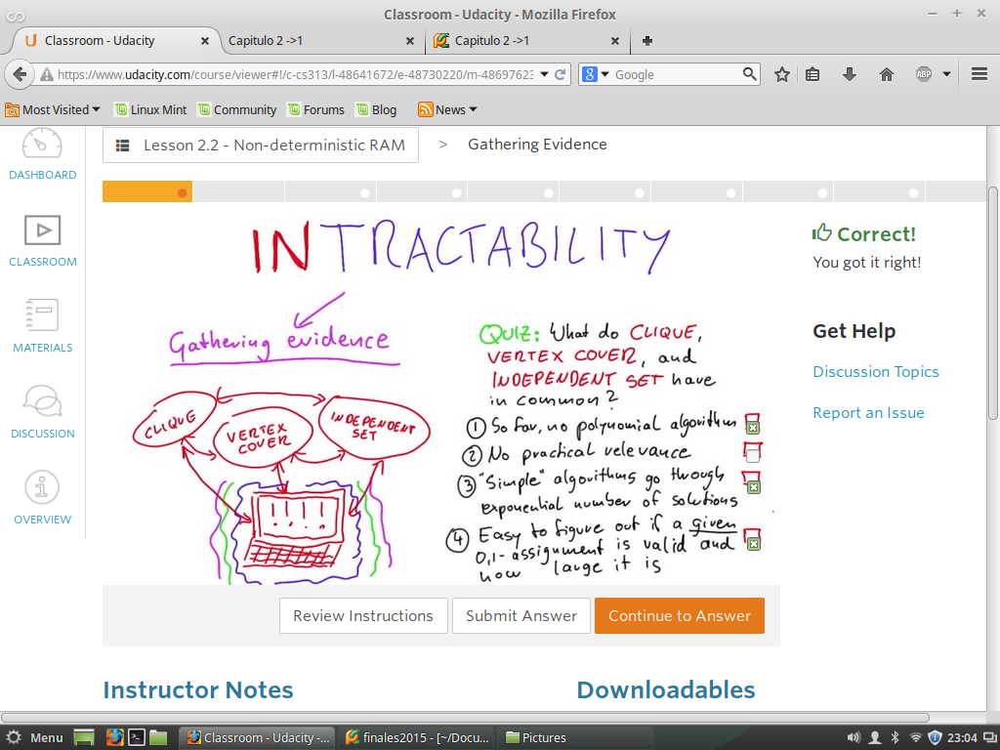
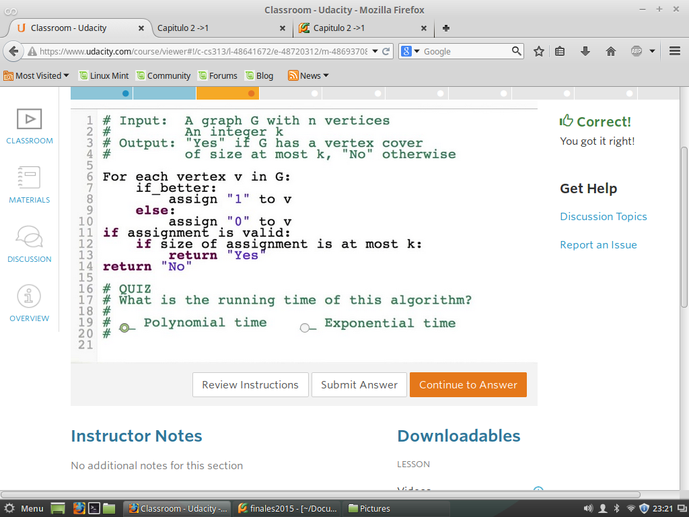
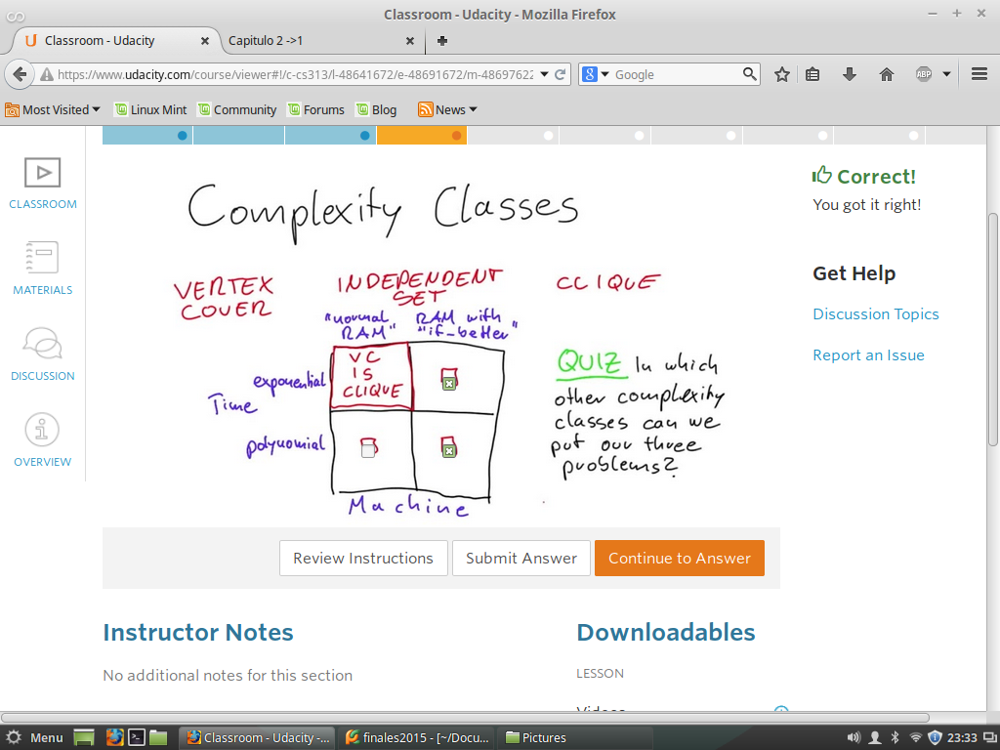
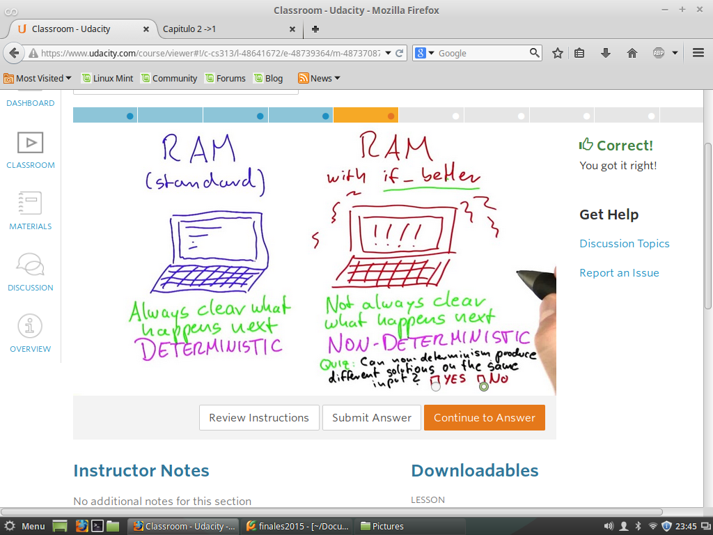
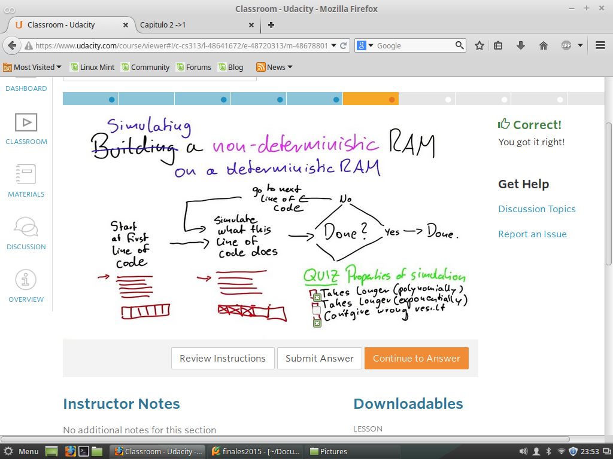
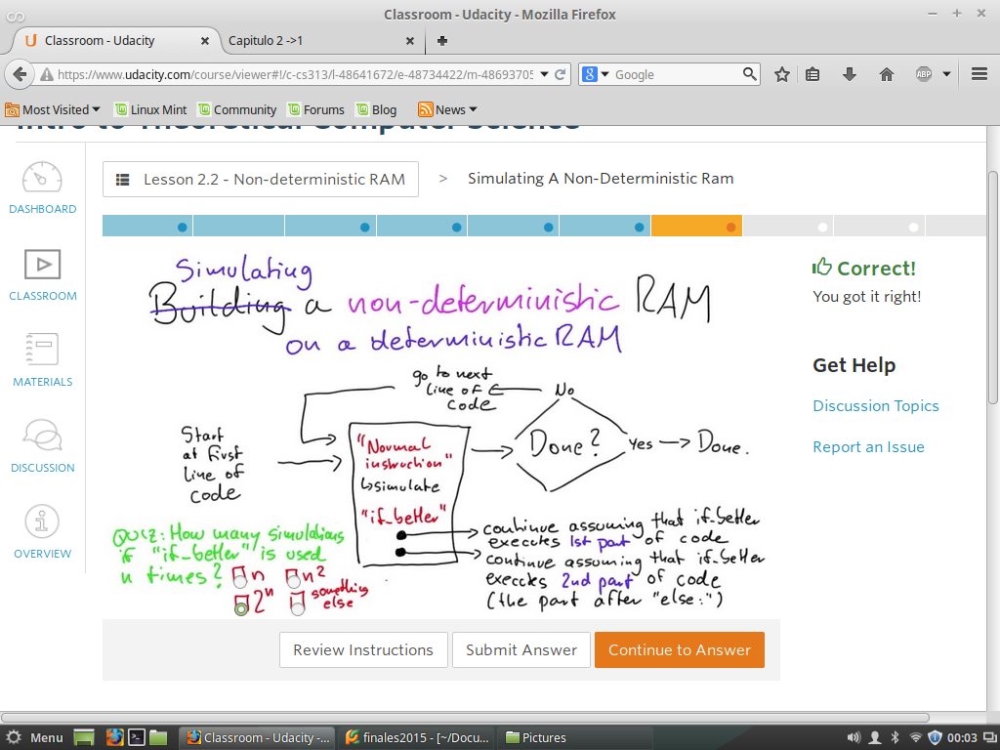
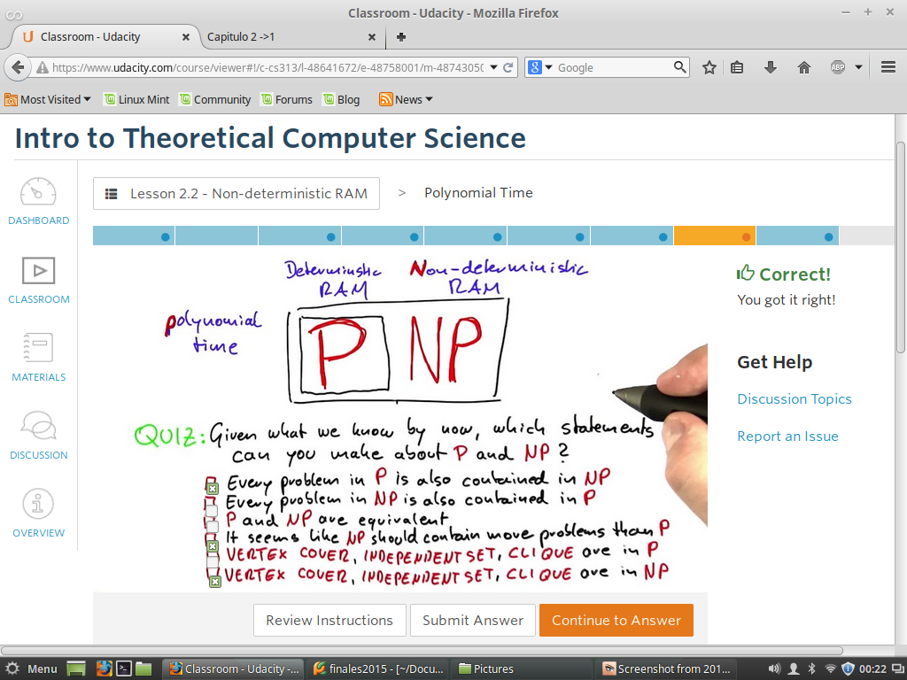
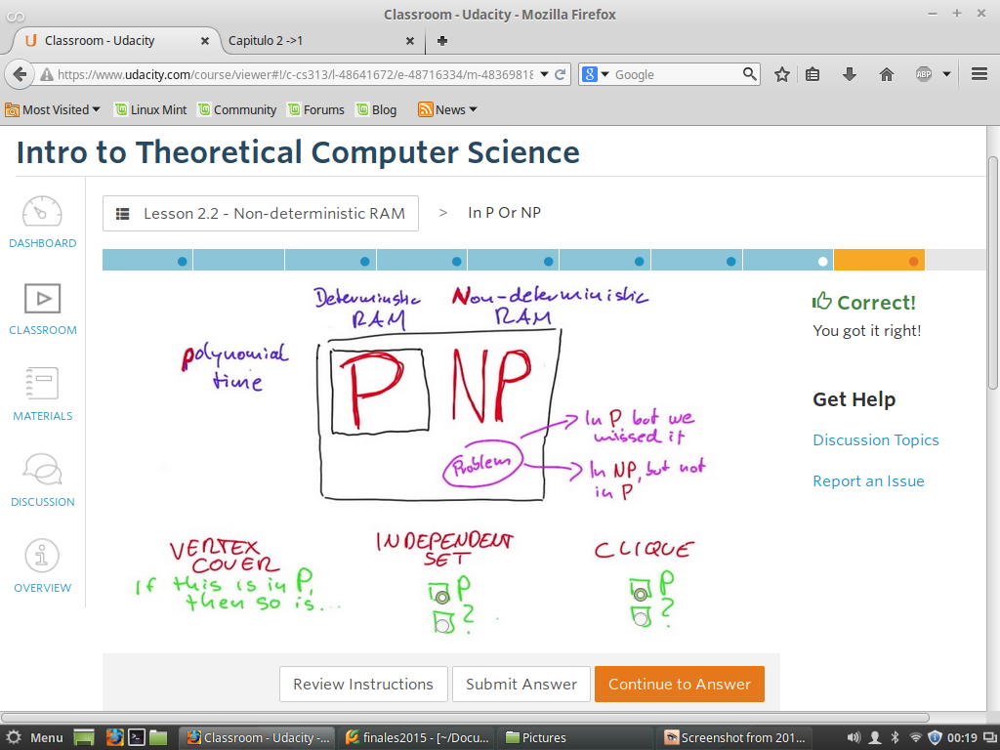

Reconocer-Comprender-Navegar
Reconocer -> Problemas Deaafiantes
Comprender->
Navegar ->
Quiz 1 - Cuales Caracteristica?
Cuales Caracteristica son comunes en los tres problemas?

Computabilidad -> Puede un programa decidir si otro programa es malware
Teaoria de Complejidad->Como de rapido un computador puede encontrar un camino entre dos puntos en un mapa.
Quiz 2 - Funcion if-better
Determinar la complidad de este algoritmos, si es polinomial o Exponencal

Quiz 3 - Clases de Complidad
La idea es identificar las clases de complejidad donde toso los problemas pueden ser reueltos
< 
Quiz 4 -RAM Estandar y If_Better
RAM estandar, hace enfasis en un equipo normal, qu podemos hacer seguimiento paso a paso
Y se puede denterminar que va suceder
Pero en una RAM qu ejecuta la funcion If_Better, hace enfasis en un equipo robusto,
que podemos hacer seguimiento paso a paso, pero cuando nos encontramos con la funcion If Better
No se puede saber que va suceder.
En conclucion en ciencias de la computacion se le llama Determinismo y No-Determinismo
Ahora veremos si un algoritmo No determinista con un entrada,y al ejecutarlo varia veces
no se puede obtenr la misma salida.

Quiz 5 -Construir o Simular No-Determinismo
La idea es secilla, primero se propone cotruir una RAM para No-determinismo
Pero resulta bastante dificil asi que se opta por Simularla
Entonces, que propiedades debe tener una simulacion de un No-Determinismo

Quiz 6 -Simular No-Determinismo
Bien ahora analizamos el la cantidad de simulaciones para un codigo de programa
que contiene la funcion If_Better

RTA: 2^n Por que cada vez estamos partiendo el en dos posibilidades de Simulacion.
Y cada una tiene un comportamiento Exponencial.
Quiz 7 - Tiempo polinomial
Un dato ma cercano a la definicion de P y NP
P-> Cualdo tenemos un problema solucionable en una memoria RAM Determinista
NP-> Cualdo tenemos un problema solucionable en una memoria RAM No-Determinista

Quiz 8 -En P o NP
Como tenemos la Primisia de que el Problema de Vertex Cover esta en P, entonces
los otros tres problemas, comoo se mensioan desde un principio tiene relacion entonces se da como rta la sig.
